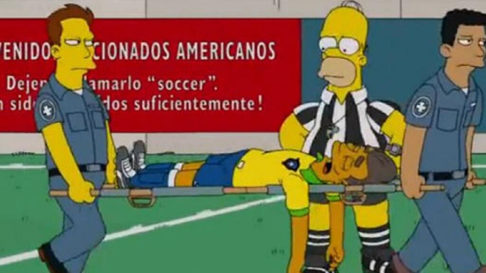
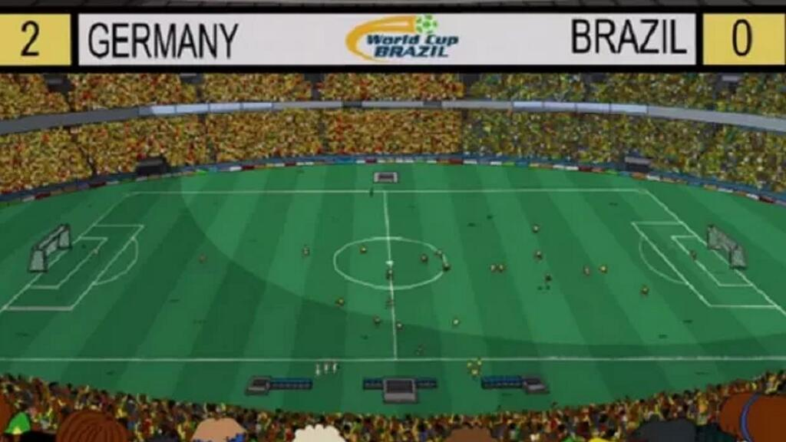
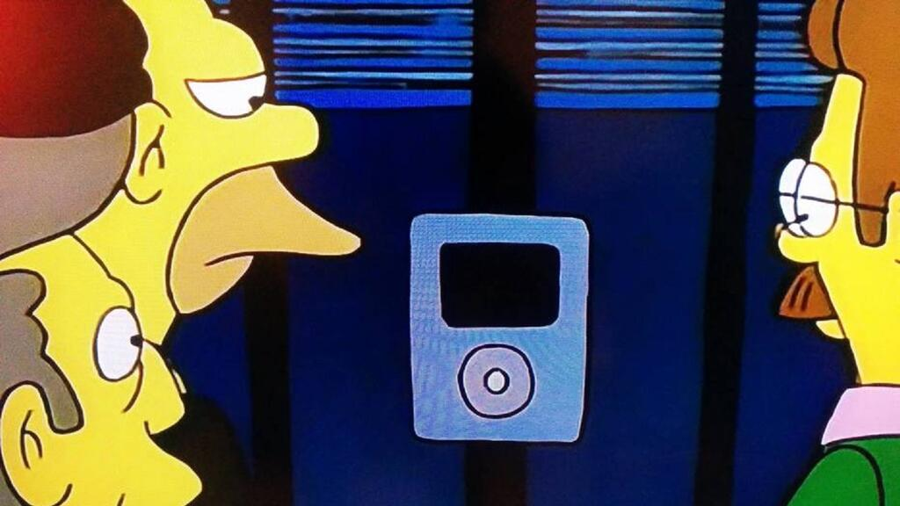
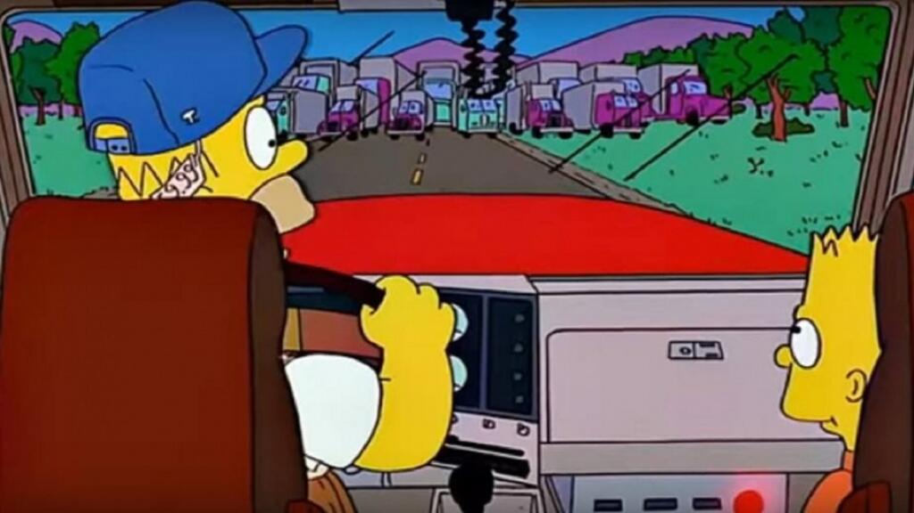

Curiosidades dos Simpsons
Qual fã de Simpsons nunca viu uma noticia na internet e falou os Simpsons previu isso em um dos episodios veja abaixo algumas delas
Relogio Inteligente
O episódio sobre o casamento de Lisa foi ao ar em 1995, ou seja, há 28 anos. Isso é bastante tempo, mas a verdade é que relógios inteligentes, que nessa data eram considerados loucuras, hoje são realidade.
Donald Trump Eleito
Quem imaginaria, em 2010, que Donald Trump seria eleito presidente dos Estados Unidos? Os Simpsons! E foi isso que aconteceu em um dos episódios da série. Após o acontecimento real, muitos relembraram esta cena dos Simpsons.
Lesao do Neymar
No mesmo episódio citado anteriormente, em 2014, a série também previu a lesão de Neymar. Nele, Homer é responsável por apitar jogos da Copa e recusa uma oferta de suborno para favorecer o Brasil. Quando um jogador cai, ele julga que se trata de uma simulação e não marca o pênalti.
a vergonhosa copa Brasil x Alemanha
Também em 2014 um episódio dos Simpsons mostrou um jogo em que a Alemanha ganharia do Brasil na Copa do Mundo de 2014. Na cena, os europeus eram campeões após marcar 2 x 0. Nem os Simpsons foram capazes de prever um placar tão vergonhoso de 7 x 1 como aconteceu na vida real, né?
ipod
Em 1996 uma cena de Os Simpsons mostrou, de forma muito rápida, um interfone dentro de uma casa. O mais curioso, que as pessoas só perceberam anos depois, é o formato do aparelho, que lembra perfeitamente um iPod.
Greve dos Caminhoneiros
Quando aconteceu a greve dos caminhoneiros em vários estados do Brasil e o preço do combustível subiu muito, muita gente relembrou a cena em que Homer está dirigindo um caminhão e se depara com outros veículos alinhados, como se fosse uma paralisação.
Preço do Combustível
O preço no combustível no Brasil subiu por conta da greve dos caminhoneiros. Já nos Simpsons, no mesmo episódio onde Homer aparece dirigindo um caminhão, o valor do combustível que aparece na bomba do posto é de US$ 999.

Guitar Hero
Em um episódio de 2002, Mick and Keith deram a Homer um casaco de "Guitar Hero". Na época, o famoso jogo de videogame ainda não existia. Talvez essa tenha sido uma inspiração para os criadores do famoso jogo.
Para voce que é um amante de simpsons como nós e quer saber mais curiosidades e conhincidencia desse seriado americano veja esse link abaixo
acessando esse link